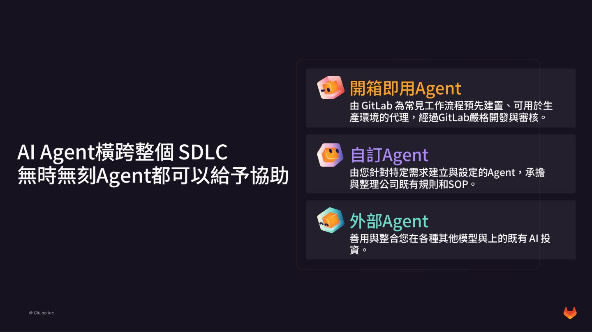
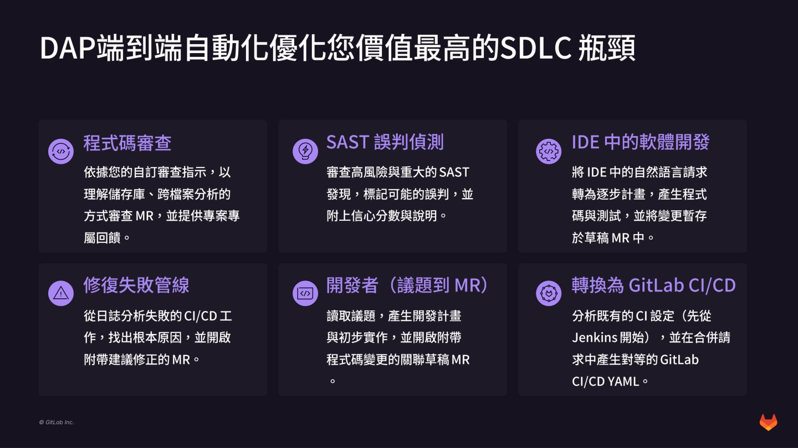
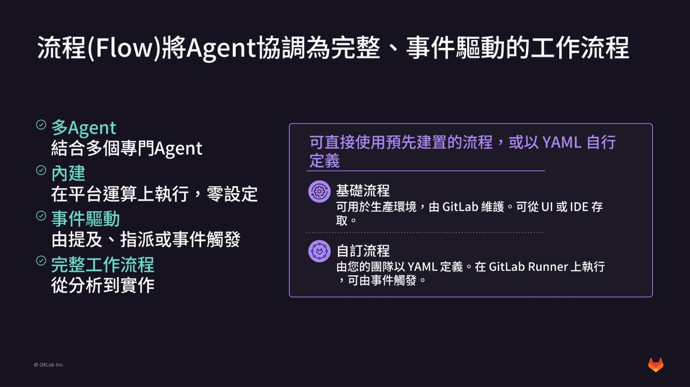
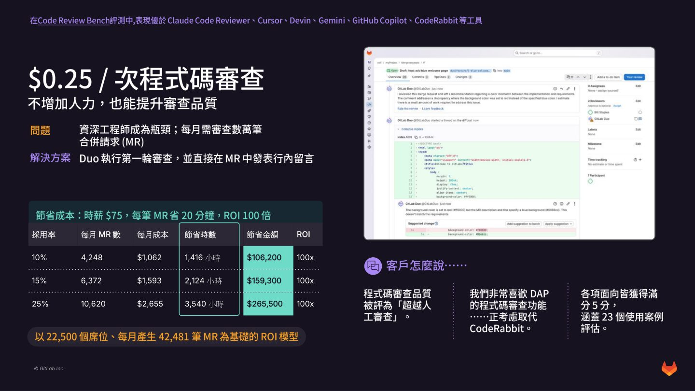

摘要
本講題由戴博斯科技分享如何以 GitLab Duo Agent Platform（DAP）推動研發流程從「手動」與「AI 輔助」演進至「Agent 自主」（開發者位於開發迴圈之上進行決策審查，Agent 執行具體工作）。為解決資深工程師耗費大量時間於重複性程式碼審查與管線修補之瓶頸，DAP 提供三大 Agent 類型：開箱即用 Agent、自訂企業 SOP 規則的自訂 Agent，以及整合既有工具（如 Devin、Claude Code）的外部 Agent。技術核心在於透過事件驅動的「流程（Flow）」機制，協調多個 Agent 執行安全修復、SAST 誤判過濾與 Jenkins 配置轉換。實務上，以 100 倍的 Code Review 量化 ROI（每次審查成本僅 0.25 美元）證明此架構能有效消除開發瓶頸，大幅提升端到端軟體交付的速度與規模。
重點整理
- 軟體開發演進三階段：從「手動」（開發者位於開發迴圈之中，每個步驟都有對應人員作業）到「Agent輔助」，再到「Agent自主」（開發者位於迴圈之上，只負責審核，Agent負責協調與執行），從構想到上線的時間也隨之從數週、數天縮短到數分鐘。
- DAP提供三種Agent類型：開箱即用Agent（如規劃、資安分析、資料分析Agent，由GitLab預先建置並經嚴格審核）、自訂Agent（由企業依自身規則與SOP設定）、以及外部Agent（可整合Claude Code、Codex、Cursor、Devin等既有AI投資）。
- DAP端到端自動化可優化多項SDLC瓶頸場景，包括程式碼審查、SAST誤判偵測、IDE中的軟體開發（自然語言轉程式碼與測試）、修復失敗管線、開發者議題轉MR、以及將既有CI設定（如Jenkins）轉換為GitLab CI/CD YAML。
- 「流程(Flow)」機制可將多個專門Agent協調為事件驅動的完整工作流程，由提及、指派或事件觸發；企業可直接使用GitLab維護的基礎流程，也可由團隊以YAML自行定義自訂流程，並在GitLab Runner上執行。
- 以22,500個席位、每月產生42,481筆合併請求(MR)的規模為例，AI程式碼審查每次成本僅0.25美元；即使採用率僅10%，仍可節省1,416小時、約106,200美元成本，ROI達100倍，且在Code Review Bench評測中表現優於Claude Code Reviewer、Cursor、Devin、Gemini、GitHub Copilot、CodeRabbit等工具。
重點圖片／架構圖




軟體開發的演進：從手動到Agent自主
演講回顧近年軟體開發流程的演進：早期（手動、依過往經驗）開發者位於開發迴圈之中，每個步驟都需要對應人員逐一作業，從構想到上線往往需要數週；進入「Agent輔助」階段後，開發者仍在迴圈之中但獲得AI協助；最終演進到「Agent自主」階段，開發者轉為位於開發迴圈之上，負責提出定義意圖，由Agent負責協調與執行，開發者只需審核結果，使得從構想到上線的時間縮短到數分鐘。演講也點出AI對軟體交付的一個矛盾：AI讓寫程式本身變得比以往任何時候都容易，但撰寫程式碼只是提升整個SDLC（規劃、建立、驗證、安全、發布、監控）創新速度中的一小部分，真正加速創新的最大契機在於提升整個生命週期所有階段的速度，而非僅止於編碼環節。
GitLab Duo Agent Platform 的三種Agent類型
GitLab Duo Agent Platform（DAP）可將Agent帶入SDLC的每一個階段，在完整整合的平台情境下自主執行動作，並可治理、可擴充、能部署於既有環境。DAP的Agent分為三種類型：由GitLab預先建置、經過嚴格開發與審核、可直接用於生產環境的「開箱即用Agent」（如協助拆解計畫並排定待辦事項優先順序的規劃Agent、分析弱點並引導修復的資安分析Agent、從GitLab指標萃取洞察並視覺化的資料分析Agent）；由企業針對特定需求建立、承接公司既有規則與SOP的「自訂Agent」；以及可整合企業既有AI投資（如Claude Code、Codex、Cursor、Devin等）的「外部Agent」。GitLab並強調能為所有這些Agent的工作成果提供具備完整稽核軌跡的儲存庫端協調，以及跨團隊、跨專案的防護機制。
DAP如何優化SDLC中的關鍵瓶頸
DAP鎖定企業價值最高的SDLC瓶頸進行端到端自動化，具體場景包括：依自訂審查指示、以理解儲存庫與跨檔案分析方式進行程式碼審查並提供專案專屬回饋；針對高風險與重大的SAST發現進行誤判偵測，標記可能的誤判並附上信心分數與說明；在IDE中將自然語言請求轉為逐步計畫，產生程式碼與測試並暫存於草稿MR中；從CI/CD工作的日誌分析失敗管線的根本原因，並開啟附帶建議修正的MR；讀取議題後產生開發計畫與初步實作，開啟附帶程式碼變更的關聯草稿MR；以及分析既有CI設定（先支援Jenkins）並在合併請求中產生對等的GitLab CI/CD YAML，協助企業從舊有CI系統轉換到GitLab。
Flow：事件驅動的多Agent協調機制
GitLab以「流程(Flow)」機制將多個Agent協調為完整、事件驅動的工作流程：結合多個專門Agent、內建於平台運算上執行且零設定、由提及(mention)、指派或事件觸發，涵蓋從分析到實作的完整工作流程。企業可直接使用GitLab維護、可用於生產環境的「基礎流程」（可從UI或IDE存取），也可由團隊以YAML自行定義「自訂流程」，並在GitLab Runner上執行、由事件觸發。演講展示了實際案例，包括Agent被指派後自動完成漏洞修正並建立MR，以及MR建立後自動觸發Agent進行Code Review的流程。
導入案例與ROI：程式碼審查的量化效益
演講點出企業普遍面臨資深工程師成為瓶頸的問題：每月需審查數萬筆合併請求（MR），而解決方案是讓DAP執行第一輪審查，並直接在MR中發表行內留言，在不增加人力的前提下同時提升審查品質與速度。以22,500個席位、每月產生42,481筆MR的規模為基礎建立ROI模型：假設時薪75美元、每筆MR審查省下20分鐘，AI程式碼審查每次成本僅0.25美元；當採用率為10%時（每月4,248筆MR），每月成本1,062美元、可節省1,416小時、約106,200美元，ROI達100倍；採用率提升至15%與25%時，節省時數與金額也等比例增加，ROI同樣維持在約100倍的水準。客戶回饋顯示DAP的程式碼審查品質被評為「超越人工審查」，在涵蓋23個使用案例的評估中各項面向皆獲得滿分5分，且在Code Review Bench評測中表現優於Claude Code Reviewer、Cursor、Devin、Gemini、GitHub Copilot、CodeRabbit等工具，也有客戶表示正考慮以DAP取代CodeRabbit。演講最後分享了實際導入前後的SDLC案例對比，以及DAP如何承擔繁瑣的程式碼審查、Pipeline修復、安全修復等儲存庫端協調工作，讓開發者專注於自己的工作流程、情境與防護機制設計。